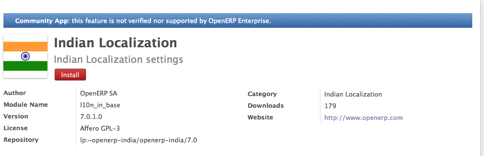

Module vs App in OpenERP¶
Since the release of OpenERP 7.0, OpenERP Apps store is integrated with all the installations of OpenERP whether they are onsite or online. You don’t need to maintain the add-ons in your local installed server when you are working with OpenERP 7.0.

OpenERP Apps Store
Module and Apps¶
Modules in OpenERP is a business application or an extension to existing business application, when you install any module in OpenERP it checks for the dependency, if they found in local add-on directory they will be installed automatically but what if you have download some module and you don’t know which dependent module to download ?

Modules and Apps menus in OpenERP
Apps view in Store¶
It will be difficult to working with the community apps or module without OpenERP’s Apps store as when you install module from Apps, OpenERP Apps store takes care for the module dependency and all the dependent module will download automatically from the apps store.
Non Certified OpenERP Apps
Yes, OpenERP is not giving any guarantee for any of the community module as those are not the OpenERP’s official add-ons but its a community add-ons and an active developer or community members or parters they takes care for for those apps.
You can add your modules to OpenERP Apps store, you just need your module to be on the Launchpad where the OpenERP’s Project hosted.
Difference of Module and Apps¶
| Parameters | OpenERP Modules | OpenERP Apps |
|---|---|---|
| Dependency Resolution | You have to resolve your self, easy for the certified module, very difficult for the community modules | It is just one click installation, When you click on install button will resolve dependency automatically |
| Installation | Quite difficult for community [1] modules as you have to resolve dependency your self | It is just one click installation, Click on the install button which install all the dependent apps |
| Updates | You will never get notify, as you decided to maintain everything your self | Under the System → Updates menu all apps will be visible who’s versions get updates |
| Support / Bug-Fix | You have to update the branch / apply patch yourself and you can get the bug-fix | You can directly apply yourself once the new version available under Updates menu, applicable for all apps Certified + Community |
| Migration | Either do it your self of contact to OpenERP for OE [2] Contract to get migration of Certified Modules | Either do it your self of contact to OpenERP for OE Contract to get migration of Certified Modules |
| [1] | All the modules they are developed by OpenERP Community and may be available at https://launchpad.net/openobject |
| [2] | OE Contract stands for the OpenERP Enterprise Contract, you can get one for your implementation at https://www.openerp.com/oe_pricing |